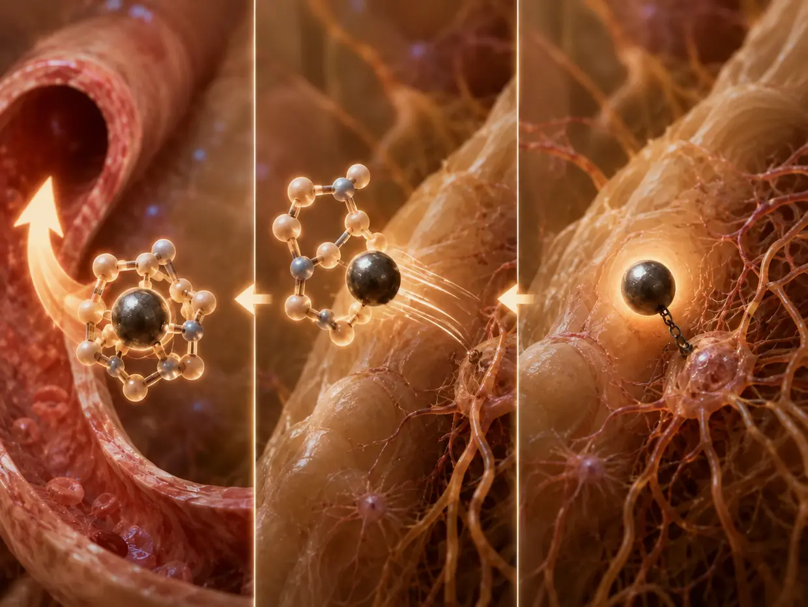

نهج الحل الخاص بي: ماذا فعلت تحديدًا حيال طنين الأذن المزمن؟
آخر تحديث: يونيو 2026
ما تقرؤه هنا هو مسار تجربتي الشخصية. إذا كانت لديك أسئلة طبية أو مخاوف صحية، فيرجى التوجّه إلى طبيب تثق به. وتطبيق النُهج الموصوفة هنا يتم على مسؤوليتك الخاصة.
حسنًا، ما الذي فعلته بالتحديد آنذاك إزاء طنين الأذن المزمن الذي كنت أعاني منه؟
«مجرد الانتظار وتجاهل الصوت» لم ينجح معي. وعندها توصلت إلى هذا القرار: كان عليّ أن أفعل المزيد. ويمكنك أن تقرأ في قصتي المختصرة كيف حدث ذلك.
بالنسبة إلى نهجي، كان ذلك يعني أن عليّ أن أفعل ثلاثة أشياء في الوقت نفسه تمامًا:
- خفض عبء العمل الميكانيكي – تجنب ذُرى الضوضاء والضوضاء المزمنة قدر الإمكان، كيلا تتعرض المضخات الأيونية المجهدة بشدة أصلًا لمزيد من الحمل الزائد.
- رفع إنتاج الطاقة الخلوية (ATP) بقوة هائلة – فمن دون فائض من الطاقة، لا يمكن أن تبدأ عملية الإصلاح الفعلية (وضع بروتينات ربط متصالب (Crosslinker) جديدة وإعادة هيكل الأهداب الحسية إلى وضعه المنتصب). وإلا ظلت الخلية عالقة في عجلة الهامستر، كما وصفت في صفحتي التفسيرية عن طنين الأذن الناجم عن الضوضاء.
- توفير مواد البناء المناسبة – أي تحديدًا اللبنات التي تستطيع الخلية أن تبني منها بروتينات ربط متصالب جديدة وبُنى الأكتين، كي تلصق الحزمة المتضررة بإحكام من جديد.
إليك التسلسل الدقيق الذي أحدث التحول لديّ:
الخلاصة المختصرة اقرأها في 60 ثانية — نظرة عامة على المسارات الثلاثة
ثلاثة أنواع من طنين الأذن، وثلاث رافعات مختلفة. في طنين الأذن الناجم عن الضوضاء، كان مساري مزيجًا من «حمية الضوضاء»، وأقصى قدر من مراحل النوم العميق، وبروتوكول منتظم للمغذيات (فيتامينات B، والنياسين، وQ10، وأوميغا 3، والليسيثين، والمعادن، والميلاتونين) يرفع إنتاج ATP – كي تخرج الخلية من عجلة الهامستر وتستطيع وضع بروتينات ربط متصالب جديدة. وبعد نحو ثلاثة إلى أربعة أشهر، اختفى طنين أذني. وفي طنين الأذن الناجم عن التوتر، سيكون مساري هو العمل على الصراعات وفق طريقة Michael Prgomet: العثور على مجالات التوتر النشطة بواسطة اختبار العضلات الكينيسيولوجي، و«ربط» المشاعر المخزنة لمدة يجري تحديدها بالاختبار، وترك العملية الفعلية لحلّ الصراع أو تفكيك الصدمة النفسية تحدث في معظمها ليلًا، أثناء النوم وفي الأحلام. أما في طنين الأذن الناجم عن السموم والأدوية، فالرافعة الأهم هي المصدر: التشخيص الطبي (بما في ذلك اختبار تحريك المعادن)، وإزالة ترميمات الأملغم، وإزالة المعادن الثقيلة من الجسم بعوامل خالِبة تحت إشراف طبي، أو إيقاف الدواء بالتشاور مع الطبيب. وتدعم لبنات الإصلاح (الليسيثين، وأوميغا 3، والبروتين، والنوم) العملية بحسب درجة الشدة – وصولًا إلى بروتوكول الطاقة الكامل عند وجود أضرار بنيوية.
الموقف المشترك: منح الجسم ما يحتاج إليه كي يستطيع إعادة نفسه إلى التوازن.
الجزء 1: مساري مع طنين الأذن الناجم عن الضوضاء
الركيزة 1: خفض عبء العمل
1. «حمية الضوضاء» (الاستراحة الميكانيكية)

كان هذا من أهم ما أدركته: خوفًا من الصوت، يعرّض جميع المصابين تقريبًا أنفسهم للأصوات – وهذا ما فعلته أنا أيضًا في البداية في الغالبية الساحقة من الوقت (آنذاك، بالدرجة الأولى، عبر مقاطع ضوضاء على YouTube أو التلفاز وهو يعمل لكي أنام). لكن الصوت حركة ميكانيكية. وكل صوت يُستخدم للحجب يجبر الأهداب الساكنة (الستيريوسيليا) على مواصلة الحركة – وهذه فيزياء محضة.
تشهد الخلايا الشعرية المتضررة، بسبب ميل أهدابها الساكنة، تدفقًا زائدًا ومستمرًا للأيونات حتى من دون حركة خارجية. ويؤدي كل تعرض صوتي إضافي إلى مزيد من تدفق الأيونات، ومن ثم إلى عبء أشد جسامة على الخلية. والنتيجة: تُدفع المضخات الأيونية، التي تعمل أصلًا بلا توقف بسبب هذا التسرّب الدائم، أبعد فأبعد نحو حدود قدرتها على التحمل، لكي تمنع الانهيار الوشيك.
وتنضم إلى ذلك مشكلة ثانية لا تقل خطورة: فالتعرض المستمر للصوت وذروات الضوضاء الشديدة يجعلان خيوط الأكتين في الحزمة المتضررة تنزلق بعضها بمحاذاة بعض. وما إن تصبح الخلية، بفضل توافر طاقة ومواد بناء كافيتين، قادرة أصلًا على إدخال بروتينات ربط متصالب جديدة (Crosslinker) بين الخيوط ولصق الهيكل معًا من جديد، حتى تهزّ الأحمال الميكانيكية المستمرة بروتينات الربط المتصالب التي أُدخلت للتو وتطردها من مواضعها قبل أن تتمكن من الارتباط بإحكام. تخيّل أنك تريد وضع ملاط طري بين حجرين بينما يدفع شخص ما الحجرين ذهابًا وإيابًا بلا توقف. النتيجة هي نفسها: تبني الخلية بشق الأنفس، وفي الوقت نفسه يهدم الصوت عملها من جديد.
(من يريد أن يفهم لماذا يحدث ذلك بهذه الطريقة على المستوى الخلوي، فسيجد الآلية كاملةً في صفحة الشرح الخاصة بي عن طنين الأذن الناجم عن الضوضاء.)
كان نهجي الآن هو: كان عليّ أن أتعلم السماح بمزيد من الصمت، أو بالأحرى إدخال أقل قدر ممكن من التعرض للصوت في حياتي اليومية – وأن أواصل ذلك طوال الفترة بأكملها إلى أن اختفى طنين الأذن لدي تمامًا. فما كنت قد استنتجته لنفسي هو: لا تحصل المضخات الأيونية، التي تعمل أصلًا بوتيرة عالية، على شيء من متنفس إلا عندما تتوقف الاستثارة الميكانيكية الآتية من الخارج – وعندها فقط تحصل الخلية على فرصة لتخصيص جزء من طاقتها لإصلاح الهيكل.
وفي هذا السياق كنت قد صغت لنفسي قاعدة أساسية: كلما تحسن إمداد الخلية بالطاقة (ATP) ومواد البناء، تمكنت في وقت أبكر من تحمّل الأحمال الميكانيكية الناتجة عن الصوت من جديد. أما توقيت بلوغ هذا الهامش الاحتياطي فهو فردي إلى حد بالغ، ويعتمد على الوضع عند البداية، وعلى النطاق الترددي المتضرر، وعلى البنية العامة للجسم.
اختبرت هذه القاعدة على جسدي في جولتين: عند إصابتي الأولى بطنين الأذن (2011)، كنت مزودًا بالمغذيات من حيث المبدأ، لكنني كنت أعمل إلى حد كبير بطاقة التوتر والكورتيزول – وكان مستوى طاقتي أدنى بوضوح مما أصبح عليه لاحقًا (وليس من دون سبب أنني أُصبت بعد نحو عام ونصف إلى أقل بقليل من عامين بمتلازمة تعب مزمن شديدة). وبناءً على ذلك، كان عليّ أن أعيش آنذاك بصرامة شديدة – صمت شبه مطلق على مدى أشهر، ولا موسيقى، ولا سماعات رأس، ولا ضوضاء يومية. بل كنت أتجنب حتى تكتكة أي ساعة.
ما يأتي كان آنذاك شديد الخطورة، وكان يمكن أن يخلّف أضرارًا دائمة. لا تحاول تقليده بأي حال.
أما إصابتي الثانية بطنين الأذن، التي تعمدت آنذاك إثارتها بوصفها تجربة، فكانت مختلفة: كان مخزون ATP لدي، بفضل سنوات من الإمداد المنتظم بالمغذيات ونوم أفضل بكثير، في مستوى مختلف تمامًا. وهذه المرة كان حل وسط ذكي كافيًا – تجنب ذروات الضوضاء باستمرار (لا سماعات رأس، ولا جهاز ستيريو مرفوع إلى أقصى مستوى، ولا ملاهٍ ليلية)، مع العيش بصورة طبيعية تمامًا فيما عدا ذلك. ذهبت للتسوق وإلى الملاهي الشعبية والسينما، والتقيت أصدقائي. ومع ذلك، اختفى طنين الأذن تمامًا بعد نحو ثلاثة إلى أربعة أشهر. (ستجد القصة الكاملة لشفائي في المرتين في قصتي المختصرة.)
كان ذلك بالنسبة إليّ الدليل الأشد وقعًا على أن السؤال ليس: «إلى أي حد يجب أن أعزل نفسي؟»، بل: «ما مدى جودة إمداد خليتي الآن؟». فكلما ارتفع مستوى ATP لدي وتحسنت مواد البناء، استطاع نظامي تحمّل قدر أكبر من أصوات الحياة اليومية – وتسارع الإصلاح بالتوازي مع ذلك.
2. الوردية الليلية الخلوية (زيادة مراحل النوم العميق إلى أقصى حد)
وكان من الضروري للغاية بالنسبة إليّ أيضًا أن أحصل على ما يكفي من مراحل النوم العميق. ففي النوم العميق يرفع الجسم وتيرة عمليات الإصلاح الخلوية – وهذا مثبت جيدًا من الناحية الفسيولوجية. تُفرَز هرمونات النمو، ويزداد تصنيع البروتين، ويرتفع النشاط المناعي.
وينطبق ذلك بصورة خاصة جدًا على السمع: فالأذن مهيأة للتعافي ليلًا، لأن المثيرات الآتية من البيئة تنخفض بدرجة هائلة، ولأنها لا تعود مضطرة إلى الاستماع على نحو نشط وتحليلي. وهذا التوقف عن عمل السمع النشط تحديدًا يحرر القدرة والطاقة اللتين تحتاج إليهما الخلية لإصلاح نفسها. ولذلك كان النوم العميق بالنسبة إليّ عاملًا حاسمًا للغاية في العملية بأكملها.
الركيزة 2: تعظيم الطاقة (نهجي الشخصي)
حقق لي النوم وتجنب الضوضاء (الركيزة 1)، في بداية إصابتي الأولى بطنين الأذن (2011)، أول تحسنات ملموسة. هدأ النظام قليلًا. لكنني اصطدمت في مرحلة ما بجدار غير مرئي – مرحلة ثبات لم يعد فيها أي تقدم يحدث ببساطة رغم كل ذلك الهدوء. وبالنظر إلى الوراء، يبدو هذا منطقيًا بالنسبة إليّ اليوم: ظلت الخلية عالقة في عجلة الهامستر. لم تكن الراحة وحدها كافية لبدء الإصلاح الفعلي. ما كان ينقص ببساطة هو الطاقة.
وعقب ذلك، شققت طريقي عند إصابتي الأولى بطنين الأذن، في عملية طويلة وشاقة، نحو مشكلة الطاقة هذه عبر تجاربي الخاصة مع المغذيات – حقن B12، والليسيثين، ومنظومة واسعة من الطب الجزيئي التقويمي. وقد وصفت الطريق بأكمله بالتفصيل في الجزء الأول من سيرتي الذاتية. نجح في نهاية المطاف، لكنه كان أبعد ما يكون عن الكفاءة.
أما الاختراق الحاسم في كيفية إعادة رفع مستوى ATP في الخلايا المنهارة بصورة منهجية وسريعة، فلم أختبره إلا بعد مدة – وليس في أذني، بل في جسمي كله. ففي عام 2013 كنت قد انهرت إلى متلازمة التعب المزمن (CFS)، مع قيمة موثقة لـATP بلغت 0.37، ومع ملازمة شبه كاملة للفراش. وما أعادني آنذاك إلى الوقوف على قدميّ كان منظومة خاصة من المغذيات السائلة – بالاقتران مع تدريب للدورة الدموية يُبنى خطوةً خطوة (كانت دورتي الدموية في الحضيض آنذاك، والدورة الدموية السليمة عنصر أساسي في موضوع الطاقة) ومع نوم تحسن بدرجة كبيرة. وقد حفز هذا المزيج أيض الطاقة لدي بدرجة هائلة إلى حد أنني نهضت في غضون شهرين من ملازمة الفراش وعدت إلى الحياة – أي إنني عدت أشارك في الحياة اليومية بصورة طبيعية وأمارس الرياضة. وفي العامين التاليين، وجدت طريقي في النهاية حتى إلى وظيفة بدوام كامل تتطلب جهدًا بدنيًا شديدًا.
وعندما واجهت إصابة ثانية بطنين الأذن بعد سنوات، كانت في يدي للمرة الأولى منظومة حقيقية مجرَّبة. كان واضحًا لي أن طنين الأذن وCFS مرضان مختلفان بسلسلتي نشوء مختلفتين، لكنهما يمكن أن يلتقيا عند اختناق هائل في طاقة ATP – وفي حالة طنين الأذن كان هذا الاختناق يعوق إصلاح الأهداب الساكنة المتضررة. ومن أجل هذه التجربة، كنت قد أوقفت المغذيات عمدًا في البداية بعد ظهور أول صوت خافت. ولم أبدأ بروتوكولي الكامل من جديد إلا عندما بلغ طنين الأذن شدةً قدرها نحو 75% وأنهيت التجربة. واستخدمت منظومة المغذيات نفسها من جديد بوصفها «مسارًا التفافيًا» شخصيًا، وهذه المرة استهدفت بها أذنيّ.
الشرط الأساسي: تناول ما يكفي من الطعام
قبل أن أصل إلى التسلسل اليومي المحدد، هناك نقطة تبدو بسيطة إلى حد أن معظم المصابين بطنين الأذن يتجاوزونها تمامًا – ولهذا السبب تحديدًا أريد أن أضعها في المقدمة صراحةً: تناول ما يكفي من الطعام. ينشأ ATP في نهاية المطاف من السعرات الحرارية. من الكربوهيدرات والدهون التي يستطيع جسمك حرقها فعلًا. من يتبع حمية غذائية في مرحلة الإصلاح هذه أو يعيش بعجز في السعرات الحرارية يقطع الغصن الذي يجلس عليه – فالطاقة المتاحة للإصلاح الخلوي تنخفض بوضوح. ومن دون هذا الأساس الطاقي يصبح الأمر صعبًا حقًا.
وعلى هذا الأساس، كان تسلسلي اليومي آنذاك على النحو الآتي:
1. دفعة الصباح
كما وصفت أعلاه، عدت إلى المنتجات نفسها التي كانت قد ساعدتني، بالاقتران مع نمط الحياة المعدَّل، على الخروج من CFS – كنت أعرف التسلسل اليومي بالفعل بدقة، وكنت أعرف تأثيراته في مستوى طاقتي. كان يومي يبدأ فور استيقاظي وعلى معدة فارغة. كنت أخلط مركزًا من المغذيات يحتوي على فيتامينات B والنياسين في كوب كبير من الماء. وإضافة إلى ذلك، كنت أشرب دائمًا في الصباح نصف لتر من الماء الصافي – عن قصد تام، لكي يصبح الدم أسهل جريانًا ولكي يسير النقل جيدًا منذ البداية.
وما كان يحدث هو الآتي: بعد الشرب بوقت قصير، بدأ احمرار النياسين المعتاد – وأصبح وجهي دافئًا واحمرّت أذناي. يوسّع النياسين الأوعية الدموية المحيطية – وكان ذلك بالنسبة إليّ تأكيدًا ملموسًا على أن طريق النقل أصبح الآن مفتوحًا على اتساعه بوجه خاص. ومع أن رفع مستوى ATP داخل الخلية أمر بالغ الأهمية، فإن الإمداد كله يصل بصورة أفضل كلما كان تدفق الدم عبر أدق شعيرات الأذن الداخلية أكثر حرية. وكان الاحمرار بالنسبة إليّ الإشارة الملموسة إلى أن الوقود ومواد البناء صارا يملكان الآن طريقًا مفتوحًا إلى الخلية الشعرية.
مهم لوضع الأمر في سياقه: في الجرعة التي أتناول بها النياسين (انظر صفحة المنتجات)، يكون احمرار النياسين ملموسًا لكنه معتدل – يصبح الوجه دافئًا، وتدفأ الأذنان أيضًا، وقد يحمر الوجه أو الأذنان أحيانًا، وربما يحدث الأمر نفسه لليدين. وليس ذلك التأثير العنيف الذي يجعل الجسم كله أحمر فاقعًا، كما في بعض مقاطع الفيديو التي يتناول فيها الناس النياسين النقي بالغرامات ويبدون في أجسامهم كلها مثل جراد البحر. ولا ينشأ ذلك التأثير العنيف في العادة إلا من جرعة زائدة بوضوح. وقد يفزع قليلًا من لم يتناول النياسين من قبل عند المرة الأولى رغم ذلك – لكن التفاعل غير ضار ويزول من تلقاء نفسه بعد 20–30 دقيقة.
2. الإمداد الأساسي (بعد نحو 30 دقيقة)
وبعد نحو 30 دقيقة، كان يأتي مستحضر شامل من المغذيات. وكان هدفي أن أوفر للجسم على امتداد الصباح قاعدة واسعة، لكي يعمل الأيض بثبات طوال اليوم ولا تنشأ فجوات في الطاقة. وكان ما يهمني بصورة خاصة في هذا السياق هو محتوى الفيتامينات الذائبة في الدهون وفيتامين C – فالفيتامينات الذائبة في الدهون تؤدي دورًا معززًا في حماية الخلايا وكذلك بصورة مباشرة بوصفها عوامل مساعدة في إنتاج الطاقة، أما فيتامين C فيشارك، بوصفه عاملًا مساعدًا ذائبًا في الماء، في عمليات أيض لا حصر لها. وهذا المزيج تحديدًا هو ما يُغفل غالبًا عندما يبحث شخص ما عن «الفيتامين الواحد» أو «المعدن الواحد».
وفي الوقت نفسه، كنت أضيف مباشرةً إلى مشروب المغذيات هذا بضع قطرات من زيت أوميغا 3 المضاف إليه Q10 وأشربها كلها معًا. ولم يكن هذا المزيج مصادفة: فالفيتامينات الذائبة في الدهون تحتاج، كما يدل اسمها، إلى الزيت لكي يتمكن الجسم أصلًا من امتصاصها بصورة صحيحة. وبما أن Q10 ذائب في الدهون أيضًا، فقد كان يُنقل هو أيضًا مباشرةً في زيت أوميغا 3. مزيج بسيط، لكنه شديد الفاعلية.
كان لـQ10 مهمة محددة في بروتوكولي – وهكذا كان قد شرحها لي آنذاك الممارس الذي كنت أراجعه، وهو Heilpraktiker (ممارس غير طبي وفق المسمى المهني الألماني): يتموضع Q10 مباشرةً في سلسلة التنفس داخل الميتوكوندريا وينشّط بقوة، قبل كل شيء، أيض الكربوهيدرات. ويعمل مثل مساعد إضافي في تحويل الوقود إلى طاقة قابلة للاستخدام. أما ATP فهو موضع الاختناق المطلق في سيناريو عجلة الهامستر. فما دامت المضخات الأيونية تلتهم كل الطاقة المتاحة لمجرد إدارة التسرّب الدائم، لا يبقى ببساطة أي شيء لعمال البناء في أعلى هيكل الأهداب الساكنة. ولا يمكن للإصلاح الفعلي أن يبدأ إلا عندما يوجد فائض – أي إدخال بروتينات ربط متصالب جديدة ولصق الحزمة معًا من جديد لتصبح قضيبًا صلبًا.
3. الليسيثين (على امتداد اليوم، بعد الوجبات)
كنت أتناول الليسيثين من دون جدول ثابت – غالبًا عقب إحدى الوجبات، موزعًا على امتداد اليوم، وكثيرًا ما كان ذلك بين الظهر والمساء. يوفّر الليسيثين الفوسفوليبيدات، أي المادة الخام لأغشية الخلايا التي لا يمكن للمضخات والمستقبلات والبنى أن تستقر في مواضعها على نحو سليم إلا داخلها.
4. مرحلة الإصلاح الليلية (مساءً)
قبل النوم بنحو ساعة، كنت أشرب مشروبًا من المعادن – يحتوي، من بين ما يحتوي عليه، على المغنيسيوم – وأخلط الميلاتونين فيه مباشرةً. وهكذا كنت أستطيع تناولهما كليهما دفعةً واحدة. يساعد المغنيسيوم والمعادن الأخرى الجسم على الدخول في وضع الراحة، ويدعم الميلاتونين الخلود إلى النوم والنوم العميق. وهذه هي تحديدًا المرحلة التي كانت الخلية تحتاج إليها لكي تعيد بناء الهيكل المتضرر فعلًا: ففي الليل تختفي المثيرات الميكانيكية على الأذن إلى حد بعيد، ولا تعود المضخات مضطرة إلى العمل عند الحد الأقصى المطلق، وتستطيع الطاقة المتحررة أن تتدفق إلى الإصلاح الفعلي.
ستجد في صفحة المنتجات الكميات والجرعات الدقيقة التي كنت أستخدمها آنذاك – مع جميع التفاصيل المتعلقة بكل منتج على حدة، والملاحظات المتعلقة بالمواءمة الفردية.
النتيجة: في غضون نحو ثلاثة إلى أربعة أشهر من التطبيق المنتظم لهذا البروتوكول – بالاقتران مع حمية الضوضاء – تحسنت حالتي تحسنًا هائلًا إلى درجة أن طنين الأذن لدي اختفى تمامًا.
السياق العلمي
قد يبدو نهجي غير تقليدي للوهلة الأولى. لكن فكرة أن زيادة ATP في خلايا القوقعة تعزز التعافي بعد أضرار الضوضاء يُعمَل عليها الآن بنشاط أيضًا في أبحاث الأدوية. ويعمل دواء AC102 (AudioCure Pharma)، الذي يُختبَر حاليًا في دراسة أوروبية من المرحلة 2، وفق المبدأ الأساسي نفسه: فهو يزيد إنتاج ATP الخلوي ويخفض الإجهاد التأكسدي في الخلايا الشعرية. وفي الدراسات قبل السريرية، خفضت جرعة واحدة السلوك المرتبط بطنين الأذن لدى الجربيل المنغولي بدرجة دالة إحصائيًا، وأعادت مشابك العصب السمعي المتضررة إلى حالتها. وفي نموذج موازٍ لفقدان السمع، أمكن تحسين عتبات السمع بمقدار 13–31 dB – وهو تحسن دال إحصائيًا، وإن لم يكن استعادةً كاملة.
ويستهدف العلاج بالليزر منخفض المستوى (التعديل الحيوي الضوئي)، الذي يُستخدم منذ عقود في عيادات متخصصة، الآلية نفسها أيضًا: يزيد الضوء القريب من الأشعة تحت الحمراء نشاط الميتوكوندريا، ومن ثم إنتاج ATP في خلايا القوقعة.
إذًا، تستهدف ثلاث طرق مختلفة – دواء، وليزر، وبروتوكول مغذيات – الهدف نفسه: إعادة إمداد الخلية بالطاقة لكي تخرج من عجلة الهامستر وتعيد تشغيل آلية الإصلاح الخاصة بها. وكان طريقي هو النهج الفموي القائم على المغذيات.
من يريد التعمق في الأساس العلمي – بما في ذلك مجمل الدراسات المتعلقة بـQ10 وأيض ATP وتعافي القوقعة – فسيجد الأدلة ذات الصلة في صفحة مصادري.
ما استخدمته تحديدًا
ستجد المنتجات التي استخدمتها أنا شخصيًا في طريقي على صفحة المنتجات. وهناك أسرد كل شيء بشفافية – بما في ذلك المعلومات عما إذا كنت مرتبطًا بالشركات المصنّعة المعنية وكيف تكون تلك الصلة.
مهم: كون هذه المنتجات قد أدت دورًا حاسمًا لدي لا يعني أنها تحقق التأثير نفسه لدى كل إنسان آخر. فكل جسم مختلف، ولكل حالة من طنين الأذن تاريخها الخاص، وطريقي ليس ضمانًا لأي شخص.
خلاصتي بشأن طنين الأذن الناجم عن الضوضاء: النَّفَس الطويل
لم تكن العملية بأكملها بالنسبة إليّ حلًا سريعًا، بل سباق ماراثون. الإصلاح الخلوي يستهلك الطاقة – وهذه حقيقة بيولوجية. أما مصدر هذه الطاقة، وكيفية توزيعها، وما إذا كانت كافية، فهو السؤال الحاسم.
عندما توقفت عن تعريض أذني لأصوات غير ضرورية (الركيزة 1) وبدأت إمداد جسمي بالمغذيات بصورة موجَّهة (الركيزة 2)، بدأ شيء ما يتحرك لدي. اختفى طنين الأذن لدي تمامًا حتى اليوم ولم يعد؛ وتؤكد مخططات السمع الخاصة بمسار إصابتي الأولى التحسن الذي طرأ خلاله.
لا أستطيع أن أثبت بأقصى درجة من اليقين العلمي ما إذا كان نموذجي الكيميائي الحيوي يقدم التفسير الدقيق لذلك – فهذا يحتاج إلى دراسات مضبوطة. لكن التلاقي مع اتجاه الأبحاث الحالي (AC102، والتعديل الحيوي الضوئي) يبين أن الفكرة الأساسية – أي زيادة ATP بوصفها مفتاحًا لتعافي القوقعة – ليست خيالًا، بل مبدأً تأخذه العلوم على محمل الجد بصورة متزايدة.
تحتاج هذه العملية إلى وقت وصبر. لكن عندما أنظر إلى ما كنت عليه آنذاك وما أنا عليه اليوم، أرى أن كل يوم منفرد كان يستحق العناء.
الجزء 2: اقتراحي للحل في حالة طنين الأذن الناجم عن التوتر
هذا ما يتعلق بطنين الأذن الناجم عن الضوضاء. لكن طنين الأذن ليس متشابهًا في جميع الحالات – وطنين الأذن الناجم عن التوتر وحش مختلف تمامًا. فالاستراتيجية نفسها لا تنطبق هنا، لأن الأذن ليست هي المشكلة هنا أيضًا. وكما أشرح بالتفصيل في صفحتي عن طنين الأذن الناجم عن التوتر، يكمن السبب في الجهاز العصبي نفسه – في صراعات عالقة ومشحونة كهربائيًا لم تعد تنحل.
وهذا يعني أيضًا أن طريق التحسن يبدو مختلفًا. فالأمر هنا لا يتعلق بإمداد الخلايا الشعرية أو برفع ATP. بل يتعلق بإعادة التيار العالق إلى الحركة.
لماذا أشارك هذا النهج – رغم أنني لم أُصب قط بطنين أذن ناجم عن التوتر
قبل أن أشرح ما الذي كنت سأفعله بالتحديد، لا بد من توضيح مهم: لم أُصب أنا نفسي قط بطنين أذن ناجم عن التوتر. ولا أعرف هذا النوع من طنين الأذن من تجربة سمعية شخصية. وثقتي بالنهج الذي أشاركه هنا تأتي من ثلاثة مصادر أخرى:
أولًا، اختبرت هذه الطريقة على جسدي – لكن في سياق آخر. ففي عام 2013، كان جهازي العصبي مفرط الاستثارة بشدة هائلة بفعل التوتر النفسي الجسدي، حتى إنني كنت أعاني من أعراض شديدة لمتلازمة التعب المزمن (CFS). وقد ساعدني آنذاك Michael Prgomet، وهو Heilpraktiker (ممارس غير طبي وفق المسمى المهني الألماني) ومحاضر يعمل بهذا النهج تحديدًا منذ أكثر من 30 عامًا، إلى حد كبير جدًا على حل هذه الصراعات العميقة بالكامل وإعادة جهازي العصبي الذاتي إلى التوازن. ولذلك أعرف من تجربة مباشرة كيف يكون الإحساس بهذه الطريقة وما الذي تحرّكه بيولوجيًا.
ثانيًا، رأيت وسمعت حالات وتقارير تجارب من واقع ممارسة Prgomet المهنية تحسن فيها مرضى آخرون بوضوح أثناء هذا العمل – مع مجموعة واسعة من الأعراض النفسية الجسدية، ومن بينهم عدد قليل من حالات طنين الأذن الناجم عن التوتر.
ثالثًا، يمتلك Prgomet نفسه خبرة تمتد عقودًا مع هذا الشكل من طنين الأذن، وقد رافق بنجاح حالات عديدة خلال تلك الفترة. هذا قوله هو، لا قولي أنا، وأنقله تمامًا كما أعرفه.
وانطلاقًا من هذه المجموعة – تجربتي الإيجابية جدًا في مرحلتي مع متلازمة التعب المزمن ومرحلتي النفسية الجسدية، والحالات وتقارير التجارب التي رأيتها وسمعتها من واقع ممارسة Prgomet المهنية، وخبرة Prgomet العملية الممتدة على مدى عقود – أجدني مقتنعًا بمشاركة هذا الطريق هنا. لا بوصفه وعدًا بالشفاء، بل بوصفه ما كنت سأفعله بنفسي لو واجهت طنين أذن ناجمًا عن التوتر.
الفكرة الأساسية: تنشيط الصراع بدلًا من تجنبه
عندما تُحجَب عاطفة أو تُكبَت، يظل تيارها الكهربائي عالقًا في الجهاز العصبي. ويحدث هذا خصوصًا عندما يظل المرء دقائق داخل مشاعر مرهقة مثل اليأس أو الخوف أو انعدام المخرج، ولا يجد سبيلًا للخروج. في هذه اللحظات تحديدًا تتشكل روابط عصبية جديدة تخزّن الصراع بوصفه غير محلول. وتفرّغ حقول التوتر المخزنة هذه شحنتها لاحقًا بلا سيطرة – وأحيانًا عبر الجهاز السمعي.
ويكمن طريق الخروج في إعادة تنشيط الصراع القديم بدلًا من مواصلة تجنبه. ولا يتعين على المرء حتى أن يعرف الموقف الأصلي بالتفصيل أو أن يحلله. يكفي أن يجد عاطفة قريبة من الأصل وأن يسمح بها بوعي. فجمل مثل «لم أعد أستطيع»، أو «كل شيء يفوق احتمالي»، أو «لا أرى مخرجًا» تعيد تنشيط الرابط العصبي القديم. وفي تلك اللحظة – مع الوعي والاستعداد للسماح بالعاطفة بدلًا من كبتها – يستطيع الدماغ بناء رابط جديد مصحِّح.
الخطوة 1: اختبار العضلات الكينيسيولوجي

تجري العملية عمليًا على النحو التالي: يستلقي المرء على أريكة علاج أو سرير. ويختبره معالج أو شخص موثوق به. يرفع ذراعه الأقوى ويمدها. ويمسك الشخص المقابل بالذراع ويمارس ضغطًا خفيفًا معاكسًا بينما يقاوم المرء هذا الضغط.
ما دام لا يوجد صراع نشط، تظل الذراع ثابتة. أما إذا لامست جملة أو فكرة صراعًا مخزنًا في الجهاز العصبي، فإن توتر العضلة ينخفض لمدة ثانية إلى ثانيتين. وتصبح الذراع أضعف لفترة وجيزة. وهذه هي الإشارة: توجد هنا نقطة توتر نشطة في الجهاز العصبي.
وبكلمة صريحة في هذا الشأن: أدرك أن اختبار العضلات الكينيسيولوجي موضع خلاف علمي. لكن ذلك يرجع في المقام الأول إلى الكيفية التي يُستخدم بها غالبًا – أي بوصفه نوعًا من «عرّاف الحقيقة» الذي يراد من خلال أسئلة بنعم أو لا أن يكشف عن حالات الحساسية أو عدم التحمل أو التشخيصات. وقد اختُبر في الدراسات ضمن هذا الاستخدام تحديدًا ووُجد أنه غير موثوق – وبصراحة: أرى أنه لم يُقصد أصلًا لهذا الغرض.
أما أنا – وكذلك Michael – فلا نستخدمه بهذه الطريقة إطلاقًا. فهو ليس لدينا اختبارًا للتشخيص أو الحقيقة، بل هو حصرًا مؤشر للتوتر: علامة استدلال على ما إذا كان الجسم لا يزال يتفاعل بتوتر داخلي مع موضوع معين – شريطة تنفيذ الاختبار بصورة سليمة. وبالتالي فالأمر لا يتعلق أبدًا بـ«الصواب أو الخطأ»، بل بالسؤال وحده: هل لا يزال هناك توتر – نعم أم لا؟
الخطوة 2: المرور على مجالات الموضوعات
يسأل المرء الآن عقله الباطن مباشرة – وبصوت مسموع: «أريد أن تجري معالجة طنين أذني وحلّه بأسرع ما يمكن. من أين ينبغي أن أبدأ؟»
ثم يمر على قائمة من المجالات: الرأس، والرقبة، والبطن، والصدر، والقلب العاطفي، والحصار 1، والحصار 2، والبيئة، وغيرها. والمجال الذي تضعف عنده الذراع هو الموضع الذي يوجد فيه حاليًا أقوى عبء كهربائي. ويحصل المرء على هذه القائمة بعد اللقاء الأول مع Prgomet أو بوصفها جزءًا من مفهومه للعلاج الذاتي.
مثال مجال الرأس: إذا استجاب الرأس، فغالبًا ما تكون هناك عواطف نشطة مرتبطة بالضغط الذهني أو فرط الأعباء أو فقدان السيطرة. ومن جمل الاستثارة المعتادة التي يختبرها المرء بعد ذلك واحدة تلو الأخرى، على سبيل المثال:
- «هذا يسبب لي صداعًا»
- «الرغبة في فرض شيء بالقوة»
- «عدم القدرة على التفكير بوضوح بعد الآن»
- «الأفكار غارقة في الضباب»
- «عدم الدفاع عن النفس»
- «هذا يزعجني»
- «لا أتوصل إلى أي حل»
- «البحث بيأس عن حل»
- «فقدان الرؤية الشاملة»
- «فقدان السيطرة على الأفكار»
وعند كل جملة تستسلم معها الذراع، يعرف المرء أن هذه العاطفة نشطة وينبغي ربطها. ويدوّن النتائج التي أصابت الهدف.
الخطوة 3: اختبار المدة
قبل أن تبدأ العملية الفعلية، نختبر كينيسيولوجيًا مدة المعالجة المطلوبة. وقد يبدو ذلك سحريًا للوهلة الأولى، لكنه في الحقيقة قراءة فسيولوجية بحتة للتوتر في جسمك أنت (ويتحدث علم النفس أيضًا عن الاستشعار الداخلي أو «الإحساس المُعاش» (Felt Sense) وفق Eugene Gendlin – أي إن الجسم يُبلغ عن حالته الداخلية الخاصة). عندما يضبط المرء تفكيره على عاطفة ويختبر مددًا زمنية واحدة تلو الأخرى – مثل 3 دقائق، ثم 5 دقائق، ثم 7 دقائق – يحدث ما يلي: الأرقام التي لا تتناسب مع الثقل العاطفي للموضوع لا تستثير أي استجابة في الجهاز العصبي. فلا تنشأ نبضة توتر، وتظل الذراع قوية. أما عندما يصيب المرء المدة التي يحتاج إليها هذا الموضوع فعلًا، فيستجيب الجهاز العصبي لها – إذ يسري في لحظة قدر كبير من تيار التوتر إلى درجة أن توتر العضلة ينخفض لفترة وجيزة وتستسلم الذراع. ولذلك فالأمر ليس عرّافًا خارجيًا يعلن رقمًا سحريًا، بل قراءة داخلية للسؤال: «كم من الوقت يحتاج نظامي كي يهضم هذا الموضوع بأمان؟»
بمجرد أن تضعف الذراع عند رقم ما، تكون تلك هي المدة المناسبة. فإذا ضعفت مثلًا عند ست دقائق، تكون هذه القيمة المتوسطة لعواطف ذلك المجال. ولا تحتاج كل عاطفة بمفردها إلى هذه المدة نفسها تمامًا – فبعضها ينحل بعد ثلاث دقائق فقط، وبعضها الآخر يحتاج إلى وقت أطول. وتُبقي القيمة المتوسطة العمل قابلًا للتطبيق وتوفر إطارًا توجيهيًا واضحًا.
الخطوة 4: «الربط»
الآن تأتي العملية الفعلية. ينطق المرء بالعاطفة المعنية بإيقاع هادئ ومنتظم – بينما يركز في الوقت نفسه على مثير بصري، مثل قرص ملون يدور أو شاشة توقف. وبهذا يُنشَّط المركز العاطفي والجهاز البصري في الدماغ في الوقت نفسه. وهذا التنشيط المتوازي تحديدًا هو ما يتيح حل الرابط القديم وبناء مسار جديد أكثر هدوءًا.
مهم: يظل المرء مسترخيًا ويترك العاطفة موجودة فحسب، من دون تحليلها أو تقييمها. وإذا لاحظ أنه تشتت أو فقد التركيز، يبدأ ببساطة من جديد. والحاسم هو أن يواصل طوال المدة التي حُدِّدت بالاختبار – مثل ست دقائق – كاملة. ويُبقي هذا التكرار المنتظم العملية سليمة ويهيئ الصراع للحل اللاحق، الذي يحدث في معظمه أثناء النوم وفي الأحلام.
الخطوة 5: حلّ الصراع أو تفكيك الصدمة النفسية — حيث يحدث الشفاء الفعلي
بعد الربط، لا يتعين على المرء أن يفعل أي شيء آخر بنشاط. فالعمل الرئيسي يحدث في معظمه ليلًا، أثناء النوم وفي الأحلام. ويسمي Michael Prgomet العملية كلها حل الصراع أو تفكيك الصدمة النفسية.
يواصل العقل الباطن العمل من تلقاء نفسه ويبحث – كما يصوغها هو – عن «أفضل حل» للوضع الحياتي الراهن. وفي أثناء ذلك يُعاد تشبيك المراكز العصبية المتأثرة، ويتفرغ التوتر الكهربائي، وتتوزع الطاقة التي كانت عالقة من قبل في النظام بالتساوي من جديد. ويختفي الضغط الداخلي، ويعود الجهاز العصبي إلى إيقاعه الطبيعي.
وبالمناسبة، يمكن أن يتفاعل الجسم بقوة أكبر في الأيام الأولى – وهذه ظاهرة معروفة في العلاج النفسي وليست، في العادة، سببًا للقلق. وبعد ذلك يصبح الوضع في معظم الأحيان أهدأ بصورة ملحوظة.
كيف يمكن تطبيق ذلك على النفس
توجد ثلاثة طرق يمكن للمرء أن يطبق ذلك بها لنفسه:
- مباشرة لدى المعالج، مثلًا لدى Michael Prgomet نفسه. اللقاء الأول لديه مجاني، ويمكن الوصول إليه هاتفيًا أو عبر WhatsApp أو شخصيًا.
- في المنزل مع شخص موثوق به، يشارك في إجراء اختبار العضلات وفق التعليمات.
- عن طريق اختباره الذاتي – يحمل المفهوم اسم «KS Eigentherapie» أو «KS Selbsttherapie». ويتضمن التعليمات الكاملة والمعرفة الخلفية وإرشادات بالفيديو. ويوفّر Prgomet قائمة مجالات الموضوعات المطلوبة بعد اللقاء الأول عبر البريد الإلكتروني أو WhatsApp أو في لقاء شخصي.
لا أتلقى أي عمولة أو ما شابه إذا ذهب شخص إلى Michael Prgomet أو استخدم علاجه الذاتي. وأذكره هنا من منطلق امتنان واقتناع حقيقيين، لأن عمله ساعدني آنذاك.
لماذا تسير العملية غالبًا بصورة أسرع مع طنين الأذن الناجم عن التوتر
نقطة مهمة في الختام: في الحالات النفسية الأعمق مثل الاكتئاب، تسير هذه العملية ببطء أكبر بوضوح، لأن التوترات متداخلة على نحو أعمق وأكثر تعقيدًا. أما طنين الأذن الناجم عن التوتر فيقع في العادة على مستوى أكثر سطحية. ولذلك يمكن أن يصبح التحسن ملموسًا في كثير من الأحيان خلال أسابيع قليلة أو أشهر – بينما تحتاج الاضطرابات العاطفية الأعمق إلى وقت أطول بوضوح.
الجزء 3: اقتراحي للحل في حالة طنين الأذن الناجم عن السموم والأدوية
هذا كل ما يتعلق بطنين الأذن الناجم عن التوتر. ويبقى المسار الثالث – وهو يعمل، مرة أخرى، وفق قواعد مختلفة تمامًا. ففي طنين الأذن الناجم عن السموم والأدوية، لا تكمن الرافعة في إمداد الجسم بالعناصر الغذائية كما في طنين الأذن الناجم عن الضوضاء، ولا في العمل على الصراعات كما في طنين الأذن الناجم عن التوتر، بل مباشرةً عند الجذر: في المادة المسببة. وما دامت هذه المادة تواصل تأثيرها في الجسم، تظل كل عملية إصلاح محدودة جدًا – مهما حاول المرء بالتوازي.
توضيح مهم مقدمًا
قبل أن أبدأ، عليّ أن أذكر بإيجاز: في طنين الأذن الناجم عن الضوضاء، أعرف تمامًا ما الذي ينجح – فقد خضت ذلك بنفسي حتى النهاية مرتين. أما في طنين الأذن الناجم عن السموم، فالأمر مختلف. ليست لديّ قصة شفاء شخصية يمكنني أن أريك إياها.
لكن ما أملكه هو نموذج ترابطي مستمد من بحث امتد عقودًا. فهو يجمع عدة حقائق بيوكيميائية منفردة معروفة، ويستنبط منها استراتيجية أراها منطقية. إذًا: ليس بروتوكولًا عشته بنفسي، بل نموذجًا – أقدمه لك هنا بوصفه وسيلة للاسترشاد.
ما يحدث في الجسم – باختصار شديد
تُلحق المعادن الثقيلة والأدوية ذات السمية الأذنية الضرر بالجهاز السمعي على مستويات مختلفة. فهي تعطل، من بين أمور أخرى، مضخات الأيونات، وتضر بالميتوكوندريا، وتهاجم غمد الميالين للعصب السمعي، أو حتى تهيّج المسارات السمعية في الدماغ (أما هذا الأخير، فهو بحسب تقديري الحالة الأندر نسبيًا، وليس السبب الأكثر شيوعًا لطنين الأذن). وتعتمد الآلية التي تكون في المقدمة لديك على المادة المحددة وتاريخ حالتك الفردي. وستجد الآلية بأكملها بالتفصيل في صفحتي التفسيرية عن طنين الأذن الناجم عن السموم.
لكن ما يهم للحل يظل صحيحًا بصرف النظر عن ذلك: لا بد من إزالة المصدر. وعندها فقط يستطيع الجسم أصلًا إصلاح الأضرار المختلفة بحسب نوع الخلية.
الخطوة 1: هل لديك أصلًا اشتباه قائم على سبب وجيه؟
قبل أن نتحدث عن نُهج الحل، سؤال أول صريح: هل لديك أصلًا سبب محدد يدعوك إلى افتراض أن طنين أذنك ربما نجم عن السموم أو المعادن الثقيلة؟
قد يبدو الأمر تافهًا للوهلة الأولى – لكنه ليس كذلك. فالتعرّف على طنين الأذن الناجم عن المعادن الثقيلة بالغ الصعوبة فعلًا. وغالبًا ما تكون الأعراض مبهمة وتختلط، قبل كل شيء، بشكاوى مختلفة تمامًا. وبحسب ما خلصت إليه من بحثي، يمكن للمعادن الثقيلة، من بين أمور أخرى، وغالبًا أيضًا بالاشتراك مع عوامل أخرى، أن تسهم في الحساسية، والتهاب الجلد العصبي، والتعب المزمن، واضطرابات التركيز، وما إلى ذلك. ونعم، لا توجد للأسف أيضًا أداة بسيطة للتشخيص الذاتي تخبرك: «نعم، هذا هو السبب». وما يتوفر لدى المصابين في معظم الأحيان ليس سوى قرائن.
ومن وجهة نظري، تشمل العلامات مثلًا:
- تعرّض مهني – مثل العمل في عيادة أسنان يُتعامل فيها، من بين أمور أخرى، مع الأملغم، أو في ورشة طلاء، أو في قطاع الصناعات الكيميائية، وما إلى ذلك.
- وجود عدة حشوات أملغم في الفم – أو إزالة حديثة لها من دون تدابير وقائية
- حادثة محددة تتذكرها: انكسار ميزان حرارة زئبقي أو سقوط مصباح موفّر للطاقة على الأرض
- أنابيب رصاص قديمة في المبنى السكني، وما إلى ذلك.
ومن وجهة نظري، ينبغي التدقيق على نحو خاص إذا ظهرت، إلى جانب واقعة طنين الأذن، أعراض مصاحبة مبهمة أخرى أيضًا، مثل الحساسية أو مشكلات الجلد أو نوبات الخلل الإدراكي وغيرها، في الوقت نفسه وبالتوازي زمنيًا.
ومن دون قرينة كهذه، يكون طنين الأذن الناجم عن المعادن الثقيلة بصراحة غير مرجح إلى حد ما. وبحسب تقديري، لا تمثل أشكال طنين الأذن الناجمة عن المواد الكيميائية، على أي حال، سوى نسبة أصغر من مجموع الحالات.
الخطوة 2: الخطوة الأهم – إزالة المصدر
إذا كان لديك بالفعل اشتباه قائم على سبب وجيه، فالخطوة الأولى ليست التداوي الذاتي أو بروتوكولًا للعناصر الغذائية، بل التقييم المتخصص وإزالة مصدر السموم.
ما دامت المعادن الثقيلة تتدفق إلى الجسم باستمرار – من الحشوات مثلًا، أو من أماكن ملوثة، أو من عملك – فإن كل عمل إصلاحي في العصب يذهب سدى. الجسم يبني، والسم يواصل الهجوم، والضرر يبقى.
التشخيص: القياس أولًا، ثم التصرّف
إذا كنت تشتبه في وجود عبء من المعادن الثقيلة، فسأنصح الجميع أولًا بالتوجه إلى طبيب ذي خبرة، أو إلى طبيب متخصص في الطب البيئي – أي شخص يعرف علم السموم فعلًا. ولا سيما لإجراء تحاليل دم موجهة والوصول إلى التشخيص الصحيح. فهو ببساطة يملك الأدوات والصلاحيات التي تحتاج إليها لذلك. ويمكن لممارس يحمل المسمى المهني الألماني Heilpraktiker أن يرافق هذا المسار بكل ترحيب – لكن التشخيص الفعلي، بالنسبة إليّ، يجب بوضوح أن يبقى في أيدي الأطباء. ومن نقاط الانطلاق الجيدة للعثور على طبيب مناسب بالقرب منك دليل أعضاء Europäische Gesellschaft für Klinische Umweltmedizin (EGKU).
ويؤدي ما يسمى اختبار تحريك المعادن – الذي يُسمى أحيانًا أيضًا اختبار التحريض – دورًا مهمًا بوجه خاص. ففي هذا الإجراء، يعطي الطبيب المريض مادة فعالة تحرّك بصورة مضبوطة جزءًا من المعادن الثقيلة المخزنة في أنسجة الجسم – أي تفكها لفترة وجيزة من مخازنها، بكمية يمكن قياسها في المختبر، من دون إثقال كاهل الجسم بذلك. فتصل هذه المعادن إلى الدم أو البول، ويمكن إثبات وجودها هناك مخبريًا. وهكذا يرى الطبيب الأمر بالأبيض والأسود: على سبيل المثال، الزئبق مرتفع بمقدار 20 ضعفًا، والرصاص بمقدار 3 أضعاف، والكادميوم أعلى قليلًا من النطاق الطبيعي، وما إلى ذلك – أو أن النتائج غير لافتة. وهذا تحديدًا يمنح العلاج بأكمله أساسًا ملموسًا بدلًا من تخمين مبهم.
إزالة المصدر
لا يبدأ العمل الفعلي إلا حين يتضح أي المعادن موجودة وبأي مستويات – ومن أين أتت أيضًا، على نحو مثالي.
عند وجود حشوات أملغم مشتبه بها، لن أذهب إلا إلى طبيب أسنان متخصص صراحةً في معايير طب الأسنان البيئي – أي يستخدم حاجزًا مطاطيًا، ونظام شفط منفصلًا، وتدابير الحماية الملائمة. فالإزالة السيئة التنفيذ يمكن أن تسبب ضررًا أكبر من الحشوة نفسها. ومن نقاط الانطلاق الجيدة للعثور على طبيب أسنان مؤهل على هذا النحو بالقرب منك خدمة البحث عن معالجين لدى Deutsche Gesellschaft für Umwelt-ZahnMedizin (DEGUZ).
أما عند وجود مصادر حادة، مثل مصباح موفّر للطاقة أو تعرّض مهني، فالقاعدة هي: تحديدها، وتجنبها، وطلب معالجتها.
إخراج المعادن من الأنسجة

هنا تدخل أساسًا ما تسمى العوامل الخالبة. وهي مواد تربط، من بين أمور أخرى، المعادن الثقيلة على نحو موجّه، وتجعل من الممكن بعد ذلك طرحها عبر الكليتين أو البراز.
وبصياغة مبسطة، يعمل ذلك مثل مغناطيسين متفاوتي القوة. يكون المعدن الثقيل مستقرًا في النسيج أو في خلاياك، ومرتبطًا ببُنى الجسم نفسه – ولا سيما بوحدات الكبريت البنائية في البروتينات. وتكون هذه الرابطة مستقرة بما يكفي لبقاء المعدن هناك سنوات، من دون أن يخرج مجددًا من تلقاء نفسه. والعامل الخالب هو، إن جاز التعبير، المغناطيس الأقوى: فعندما يقترب، ينتقل المعدن إليه كيميائيًا. ويكون المعقّد الخالب قابلًا للذوبان في الماء، ويدخل الدم ثم يخرج عبر الكليتين – وانتهى الأمر. صحيح أن هذه ليست مغناطيسية حقيقية، بل منافسة كيميائية – لكنني أرى أن هذه الصورة تصف التأثير جيدًا جدًا.
هذه الآلية تحديدًا حاسمة عندما تكون المعادن الثقيلة مستقرةً في أعماق النسيج العصبي. فالعلاجات المنزلية البحتة، مثل البنتونيت (الطين العلاجي) أو الكلوريلا، مفيدة أيضًا بالفعل، لكنها تؤدي دورًا آخر – إذ تربط المعادن الثقيلة أساسًا في الأمعاء فقط، وتمنع إعادة امتصاص المعادن المطروحة عبر الصفراء. وهذا يعني أنها تكاد لا تدخل الدم، ومن ثم لا تصل أيضًا إلى النسيج العصبي. لذلك، وبحسب ما بحثته حتى الآن، فهي لا تسحب الزئبق من العصب السمعي. وبعبارة واضحة: من يريد فعلًا إخراج المعادن الثقيلة من داخل الجسم، لا يمكنه في العادة الاستغناء عن عوامل خالبة حقيقية تحت إشراف طبي.
وتستحق الكزبرة أيضًا ذكرًا مستقلًا (وتُسمى كذلك Cilantro)؛ إذ يُنسب إليها في الطب الطبيعي – مثلًا في بروتوكولات Dr. Dietrich Klinghardt – دور خاص. ويستند هذا الافتراض إلى عقود من الممارسة في الطب الطبيعي، ولا تسنده دراسات سريرية تقليدية. وخلافًا للعوامل الخالبة التقليدية، لا تربط الكزبرة المعادن الثقيلة مباشرةً، بل تحركها من مخازن أعمق، مثل نسيج الدماغ أو الميتوكوندريا – أي من المواضع نفسها التي يوجد فيها غالبًا جزء كبير من الضرر عند طنين الأذن الناجم عن المعادن الثقيلة.
فإذا استُخدمت الكزبرة بكمية علاجية، ولم يكن هناك في الوقت نفسه عامل رابط يعمل في الدم – مثل عامل خالب تقليدي تحت إشراف طبي – أمكن للمعادن التي جرى تحريكها، وهي في طريقها عبر الجسم، أن تترسب مجددًا في موضع آخر قبل أن تصل أصلًا إلى الأمعاء. وهذا ما يسمى «تأثير إعادة التسمم»، ويمكنه حتى أن يفاقم الشكاوى مؤقتًا وبوضوح. وهذا يعني أن من المفيد بالفعل تناول الكلوريلا أو البنتونيت بالتوازي أيضًا – لكنهما، كما ذُكر من قبل، يعملان أساسًا في الأمعاء؛ ومن ثم لا يستطيعان ضمان ألا يعلق قبل ذلك جزء من المعادن التي جرى تحريكها في موضع آخر.
لذلك ينبغي بوضوح أن يبقى الاستخدام في أيدٍ خبيرة، لا أن يُجرى باجتهاد فردي.
ومن يفكر في هذا المسار البديل، يمكنه أن يبحث في الطب الطبيعي عن صبغات من الكلوريلا والكزبرة محضّرة خصيصًا. صحيح أنها تكون في العادة مرتفعة الثمن إلى حد ما، لكن يُفترض ويُلاحَظ في ممارسة الطب الطبيعي أنها تستطيع دعم تحريك المعادن الثقيلة ونقلها إلى خارج الأنسجة.
ورغم كل شيء، فسأميل شخصيًا إلى التوصية بالمسار الطبي – مع تحاليل دم مضبوطة، واختبار تحريك المعادن التقليدي، وجهة اتصال متخصصة إلى جانبك. أو، على الأقل، بمزيج من المسار البديل والمسار الطبي: تشخيص طبي مسبق، وفحص للدم بعد بضعة أشهر من الاستخدام البديل، لمعرفة ما الذي يحدث فعلًا.
موضع الفرق بين طنين الأذن الناجم عن الأدوية وذاك الناجم عن المعادن الثقيلة
يجدر بنا هنا أيضًا أن ننظر إلى فرق مثير للاهتمام: في بعض الحالات التي يكون فيها الدواء هو العامل المسبب – ولنأخذ مثلًا جرعةً زائدة قصيرة الأمد من الأسبرين، تعني في الوضع المعتاد عدة غرامات – يتعافى الجهاز، بعد إيقاف الدواء، بسرعة مدهشة من تلقاء نفسه في كثير من الأحيان. لماذا؟ لأن عتاد الخلية الشعرية لم يتضرر ماديًا أصلًا. لم يكن الأمر «سوى» اختلال بيوكيميائي يعود إلى التوازن مع زوال الدواء.
أما المعادن الثقيلة، فالوضع معها مختلف تمامًا. فهي تترسب في أعماق النسيج العصبي، ولا يطرحها الجسم مجددًا إلا ببطء مؤلم. وهنا يستغرق التعافي وقتًا أطول بكثير، ويحتاج إلى دعم فعّال – من ناحية عبر إزالة المعادن الثقيلة من الجسم على نحو مهني، ومن ناحية أخرى عبر ما سيأتي في الخطوة التالية: مواد البناء المناسبة للإصلاح.
الخطوة 3: ما يكون منطقيًا فعلًا بوصفه دعمًا
بعد إزالة المصدر، وإذا كانت عملية إزالة المعادن الثقيلة من الجسم بمرافقة طبية جاريةً عند اللزوم، يبرز السؤال التالي: ما الذي أستطيع أن أضيفه من مجال خبرتي الشخصية لدعم مرحلة الإصلاح؟
عليّ هنا أن أكون صريحًا مرة أخرى – وعلى خلاف ما تريد مواقع كثيرة عن طنين الأذن أن تبيعه لك: في حالة طنين الأذن الناجم عن المعادن الثقيلة وحدها، وبعد إزالة المصدر، وإذا كنت تتمتع بصحة جيدة من حيث المبدأ ولم تكن سنك متقدمة جدًا، فإنك، بحسب قناعتي، لا تحتاج أصلًا إلى بروتوكول طاقة معقد كما في طنين الأذن الناجم عن الضوضاء. يستطيع الجسم أن يجدد نفسه بصورة جيدة على نحو مدهش – ولكن أبطأ بكثير مما لو تلقى دعمًا كاملًا بالطاقة.
وبصراحة، أظن حتى أن كثيرًا من المصابين قد يصلون إلى الشفاء من دون أي مكملات غذائية، ما إن يُزال مصدر السموم – وذلك ببساطة بمرور الوقت، والنوم الكافي، والتغذية الجيدة. يستطيع الجسم أن يصنع الفوسفوليبيدات وما شابهها بنفسه إلى حد معين، إذا أتت الوحدات البنائية عبر الغذاء. غير أن الأمر يستغرق وقتًا أطول بكثير، وخلال ذلك الوقت يتعين على المرء أن يعيش مع طنين الأذن.
ثلاث درجات للشدة، وثلاثة احتياجات مختلفة للإصلاح
يتوقف مقدار دعم الإصلاح الذي يحتاج إليه جسمك تحديدًا على مدى عمق الضرر. ومن وجهة نظري، توجد في طنين الأذن الناجم عن المعادن الثقيلة ثلاث درجات نموذجية للشدة، يمكن أن تنتقل إحداها إلى الأخرى بسلاسة.
الدرجة 1 – ضرر عصبي (الحالة الأكثر شيوعًا): المشكلة الرئيسية هنا هي غمد الميالين المتضرر للعصب السمعي بين الأذن الداخلية وجذع الدماغ. يكون العصب متهيجًا وملتهبًا، ويُجري التوصيل على نحو خاطئ. لكن الخلايا الشعرية نفسها تكون سليمةً إلى حد بعيد، وتظل بُناها تعمل. وهنا، وبحسب تقديري، يكفي في حالات كثيرة حتى الإعداد الأساسي البسيط – الليسيثين، وأوميغا 3، والبروتين، والنوم – إلى جانب إزالة المعادن الثقيلة من الجسم.
الدرجة 2 – إجهاد بيوكيميائي داخل الخلية الشعرية: هنا تكون المعادن الثقيلة قد عطلت مضخات ATP في الخلايا الشعرية، وثبطت الميتوكوندريا، وأخلّت بالإنزيمات في أيض الطاقة. وكثيرًا ما تكون قد أزاحت أيضًا الزنك عن مستقبلات العصب السمعي – والزنك يعمل هناك مكبحًا طبيعيًا يحمي الجهاز العصبي من المبالغة في الاستجابة لكل مثير صغير. وعندما يتعطل هذا المكبح، يصبح العصب السمعي مفرط الاستثارة أيضًا. ويختل توازن الأيونات، ويتدفق البوتاسيوم والكالسيوم إلى الداخل بقدر أكبر، ويزداد الإجهاد التأكسدي. لكن – وهذه هي النقطة الحاسمة – الوحدات البنائية الهيكلية للخلية الشعرية (خيوط الأكتين، وبروتينات الربط المتصالب، وهندسة الأهداب الساكنة) لا تكون قد تدمرت بعد في هذه الحالة. وإنما تكون واقعةً تحت ضغط بيوكيميائي فحسب. وهنا يساعد، إلى جانب الإعداد الأساسي، بروتوكول الطاقة الكامل من الركيزة 2 – فيتامينات B، وQ10، والمعادن (مع الزنك والسيلينيوم على نحو موجّه)، ومضادات الأكسدة – على إعادة رفع أيض الطاقة، وتخفيف العبء عن المضخات، وتعويض العناصر النزرة التي أُزيحت، ما إن تُزال المعادن الثقيلة من الجسم.
الدرجة 3 – أضرار بنيوية (الحالة الأشد): إذا كان عبء المعادن الثقيلة موجودًا فعلًا منذ وقت طويل وبشدة، فإن الخلايا الشعرية تضعف في مرحلة ما إلى درجة ظهور أضرار بنيوية حقيقية حتى من دون صدمة ضوضائية تقليدية. وعندئذ لا تعود هناك حاجة حتى إلى أمسية في ملهى ليلي عند 110 dB – بل تكفي ضوضاء الحياة اليومية العادية لاستنزاف الاحتياطيات الأخيرة. تتمزق وصلات الأكتين، وتنكسر بروتينات الربط المتصالب، وتنثني الأهداب الساكنة، وتختل هندستها. وهكذا نصل في النهاية إلى الحالة النهائية نفسها الموجودة في طنين الأذن الناجم عن الضوضاء: شعيرات منحنية على نحو دائم، وروابط قمم تحت شد دائم، وقنوات أيونية مفتوحةً بصفة دائمة، وخلية شعرية عالقة في عجلة الهامستر الطاقية. والفرق عن طنين الأذن الناجم عن الضوضاء وحدها هو أن عبء المعادن الثقيلة يجب أن يزول هنا أيضًا، وإلا فلن يحدث أي تجدد. ويحتاج الإصلاح في هذه الحالة إلى البرنامج الكامل: إزالة المصدر + حمية الضوضاء + بروتوكول الطاقة الكامل + الوحدات البنائية للنسيج العصبي.
والمخادع في الأمر هو أنك بالكاد تستطيع أن تحدد من الخارج، على وجه اليقين، الدرجة التي توجد فيها تحديدًا. ولذلك أنصحك بأن تستند إلى أفضل تقدير لديك – وأن تختار، عند الشك، قدرًا أكبر من الدعم بخطوة بدلًا من قدر أقل بخطوة. لكن الركيزة الأساسية تظل متطابقة في الدرجات الثلاث كلها: إزالة المصدر، وإلا واصل الجسم مسار الضرر.
الطريق العملي الأوسط
ما أراه، بالنسبة إلى معظم المصابين، بدايةً واقعية – منخفضة التكلفة، وبسيطة، وهي وفق نموذجي ما يحتاج إليه النسيج العصبي تحديدًا للإصلاح:
الليسيثين بوصفه مصدرًا للفوسفوليبيدات. يتكون غمد الميالين للعصب السمعي من دهون بنسبة تقارب 80%. وإذا هاجمت المعادن الثقيلة هذا الغمد، فإن الفوسفوليبيدات هي مادة البناء الأساسية التي يعيد جسمك بناءه بها. وهذا المنطق نفسه موثق جيدًا الآن في الأبحاث المتعلقة بالأعصاب المحيطية – إذ يُعد الفوسفاتيديل كولين (المكوّن الرئيسي لليسيثين) مادة بناء معروفة لخلايا شوان والميالين.
أحماض أوميغا 3 الدهنية – ولا سيما DHA، وهو مكوّن أساسي للنسيج العصبي. كما أن أوميغا 3 مضاد للالتهاب، وهذا مفيد بوجه خاص في حالة عصب متهيج على نحو مزمن.
كمية كافية من البروتين من أغذية حقيقية. فالإصلاح يستهلك أحماضًا أمينية، والنقص المزمن في البروتين يبطئ كل تجدد للأنسجة.
نوم جيد – كما وُصف في الركيزة 1، يرفع الجسم عمليات الإصلاح ليلًا. وينطبق ذلك على النسيج العصبي كما ينطبق على الخلايا الشعرية.
تقليل الضوضاء في الحياة اليومية – حتى إذا لم يكن الضرر هنا ميكانيكيًا في المقام الأول، فإن الجهاز السمعي المجهد لا يستفيد شيئًا من إثقاله بالصوت أيضًا. وتساعد حمية ضوضائية معتدلة الجهاز العصبي على التهدئة.
ومن يريد إبقاء الأمر منخفض التكلفة وبسيطًا، فإنه، بحسب قناعتي، يقطع شوطًا بعيدًا جدًا بهذه النقاط الخمس.
لمن يريد سرعةً أكبر وشمولًا أكبر: بروتوكول الطاقة الكامل
إن بروتوكول الطاقة الكامل الذي استخدمته في طنين الأذن الناجم عن الضوضاء (الركيزة 2) ليس ضروريًا هنا – لكنه يستطيع تسريع أشياء كثيرة. وتُضاف عندئذ فيتامينات B أيضًا (العوامل المساعدة التقليدية لإصلاح الأعصاب)، والمعادن، وQ10، ومضادات الأكسدة مثل فيتاميني C وE، فضلًا عن السيلينيوم والزنك. فالمعادن الثقيلة تولّد، أثناء وجود العبء، جذورًا حرة تواصل إتلاف النسيج – ويمكن لإمداد جيد بمضادات الأكسدة أن يعمل هنا عاملًا مخففًا.
متى يستحق هذا الجهد؟
- إذا كانت لديك أعباء سابقة بالفعل – أمراض مزمنة، أو أمعاء ضعيفة، أو سن متقدمة، أو عدة أعباء في الوقت نفسه. فعندئذ يكون جهاز الإصلاح الذاتي في جسمك مقيدًا أصلًا، ويُحدث الدعم الخارجي فرقًا ملحوظًا.
- إذا كنت ستعاني على نحو ملموس من انتظار الإصلاح الطبيعي البطيء أشهرًا أو سنوات. فعندئذ يكون التسريع جودةً للحياة.
- أو إذا كنت تبحث على أي حال عن إعداد يكون جسمك معه مزوّدًا بإمداد مستقر يتجاوز الإصلاح الحاد أيضًا.
لكن النقطة المهمة تظل هي أن بروتوكول الطاقة ليس هنا الرافعة التي ينقلب عندها طنين الأذن الناجم عن المعادن الثقيلة في نهاية المطاف. الرافعة هي المصدر. وكل ما يُضاف من دعم بالعناصر الغذائية يسرّع عملية إصلاح لا يمكن أن تبدأ أصلًا ما لم يُزل المصدر.
الخطوة 4: ماذا تفعل عند طنين الأذن الناجم عن الأدوية؟
عندما تكون الأدوية هي العامل المسبب، يكون الأمر في كثير من الأحيان أوضح بكثير مما في حالة المعادن الثقيلة. فإذا ظهر طنين أذنك في ارتباط زمني وثيق بتناول دواء معين – ولا سيما مع المشتبه بهم التقليديين ذوي السمية الأذنية، مثل الأسبرين بجرعات عالية، أو الأمينوغليكوزيدات، أو مدرّات البول العروية، أو أدوية العلاج الكيميائي، أو الكينين – يكون السبب واضحًا نسبيًا.
المنطق الأساسي في طنين الأذن الناجم عن الأدوية مطابق تقريبًا لحالة المعادن الثقيلة – لكنه يأتي في صورة أبسط. وهنا أيضًا تكون الرافعة الأهم هي: إزالة المصدر. ويعني ذلك في هذه الحالة إيقاف الدواء المسبب أو تغييره. لكن من فضلك – ولا أستطيع أن أكرر ذلك بما يكفي – يجب أن يكون هذا دائمًا بالتشاور مع الطبيب، وألا تفعله أبدًا من تلقاء نفسك. تحدث مع طبيبك المعالج لمعرفة ما إذا كان يمكن الاستغناء عن الدواء أو استبداله بمستحضر آخر. فبعض الأدوية يُتناول فعلًا لعلاج أمراض خطيرة، وقد يكون إيقافه فجأة أخطر من طنين الأذن نفسه.
ما يحدث بعد إيقاف الدواء يعتمد بشدة على الدواء الذي كان العامل المسبب. ومن منطلق نموذجي، أرى ثلاث حالات نموذجية:
الحالة 1 – الحالة القياسية السريعة (الأسبرين، ومدرّات البول العروية، والكينين): تزول هذه المواد الفعالة من الجسم بسرعة نسبية بعد إيقافها – في غضون ساعات أو أيام غالبًا. وإذا لم تتضرر الخلايا الشعرية بنيويًا (وهو ما يحدث كثيرًا عند تناول جرعة عالية لمدة قصيرة)، فإن الجهاز يتعافى في أحيان كثيرة من تلقاء نفسه في غضون أيام إلى أسابيع. وهذه هي حالة الأسبرين التي وصفتها أعلاه – العتاد سليم، ولم تكن سوى الكيمياء الحيوية قد اختلت لفترة وجيزة. وهنا لا تكون هناك في العادة حاجة أصلًا إلى بروتوكول إضافي للإصلاح. الصبر، والنوم الجيد، والتغذية الجيدة – ويعيد جهازك معايرة نفسه من تلقاء ذاته.
الحالة 2 – التعافي العنيد رغم إيقاف الدواء (الأمينوغليكوزيدات، وسيسبلاتين): تتصرف بعض الأدوية على نحو مختلف وخادع. فبعض المضادات الحيوية القوية، مثل الأمينوغليكوزيدات (ومنها مثلًا جنتاميسين)، تتراكم في الأذن الداخلية ولا تتحلل هناك مجددًا إلا ببطء شديد – وقد يستغرق ذلك أسابيع إلى أشهر، وفي الحالات القصوى ما يقرب من عام. كما تحتوي أدوية العلاج الكيميائي، مثل سيسبلاتين، على مكوّنات من معادن ثقيلة تحتوي على البلاتين، وتترسب على نحو مشابه. وهذا يعني أنه حتى إذا كان الدواء قد أُوقف منذ مدة طويلة، فقد يظل يتّقد ببطء في الأذن ويواصل إحداث الضرر. فإذا ظل طنين أذنك موجودًا بعد أسابيع أو أشهر، فليس ذلك بالضرورة علامةً على فشل المعالجة – ففي أحيان كثيرة تكون المادة الفعالة ببساطة لم تختفِ بعد من الأذن الداخلية. وهنا يفيد الصبر إلى جانب دعم الإصلاح نفسه المستخدم في طنين الأذن الناجم عن المعادن الثقيلة: الليسيثين وأوميغا 3 للأعصاب، ومضادات الأكسدة لمواجهة الإجهاد التأكسدي، وأيض طاقة جيد لإصلاح الخلايا.
الحالة 3 – عندما يبقى ضرر بنيوي: إذا ظل طنين الأذن موجودًا بعد كل ذلك الوقت من دون الدواء – سواء بعد نوبة جرعة عالية من الأسبرين أو بعد مسار من الأمينوغليكوزيدات – فإنني أفترض أن ضررًا بنيويًا قد وقع فعلًا. بروتينات الربط المتصالب ضعفت، وخيوط الأكتين تضررت، والأغشية تضررت. وعندئذ نكون مجددًا أمام الحالة النهائية نفسها كما في طنين الأذن الناجم عن الضوضاء أو الدرجة 3 من طنين الأذن الناجم عن المعادن الثقيلة: الخلية عالقة في عجلة الهامستر الطاقية. وهنا يكون برنامج الإصلاح الكامل مناسبًا – أي بالضبط النهج الذي وصفته انطلاقًا من الركيزة 2 لطنين الأذن الناجم عن الضوضاء. رفع إمداد ATP، وتوفير الوحدات البنائية للأغشية، وإتاحة مضادات الأكسدة، والتحلي بالصبر. إضافةً إلى ذلك، إذا لم يكن هذا قد حدث بعد: أعِد التحقق مع الطبيب من عدم وجود مصدر آخر لا يزال يتّقد ببطء بالفعل.
والجانب الجميل في طنين الأذن الناجم عن الأدوية مقارنةً بطنين الأذن الناجم عن المعادن الثقيلة هو أن إزالةً فعلية للسموم باستخدام عوامل خالبة أو ما شابهها ليست ضرورية أصلًا في الغالبية العظمى من الحالات. فالمواد الفعالة تزول من تلقاء نفسها بمرور الوقت – لكن أحيانًا على نحو أسرع، وأحيانًا على نحو أبطأ. وهذا يجعل الأمر قابلًا للتخطيط بدرجة أكبر على الأقل.
ثلاثة مسارات، موقف واحد
ثلاثة أنواع من طنين الأذن، وثلاث رافعات مختلفة – ومع ذلك يجمعها موقف أساسي واحد.
في طنين الأذن الناجم عن الضوضاء، رافعتي هي الطاقة. فالأذن متضررة ميكانيكيًا، والخلية عالقة في عجلة الهامستر – ومن دون فائض من ATP لا تبدأ عملية الإصلاح. ومساري هناك: «حمية الضوضاء»، والنوم، وبروتوكول منتظم للمغذيات يعيد رفع أيض الطاقة.
في طنين الأذن الناجم عن التوتر، رافعتي هي الصراع العالق. فالمشكلة هنا ليست الأذن، بل الجهاز العصبي الذي لم يعد يتخلّص من التوترات العاطفية القديمة. ومساري هناك: العمل الموجَّه على الصراعات وفق الطريقة التي تعرفت إليها عن طريق Michael Prgomet – تنشيط العاطفة بوعي ثم ترك عملية الحل تحدث بعد ذلك في معظمها أثناء النوم وفي الأحلام، بدلًا من مواصلة تجنبها.
في طنين الأذن الناجم عن السموم والأدوية، رافعتي هي المصدر. فما دامت المادة الضارة تواصل فعلها داخل الجسم، تذهب كل عملية إصلاح سدى. ومساري هناك: تحديد المحفّز أولًا وإزالته بمساعدة متخصصة، ثم – إذا لزم الأمر – تقديم دعم موجَّه للإصلاح.
على قدر اختلاف هذه المسارات الثلاثة، يتطابق بالنسبة إليّ المبدأ الكامن وراءها: منح الجسم ما يحتاج إليه كي يستطيع إعادة نفسه إلى التوازن. لا فرض شيء عليه من الخارج ولا إجباره، بل فهم ما يتطلبه السبب المعني فعلًا – ثم التصرف على هذا الأساس باستمرار.
تحتاج هذه العملية إلى الوقت والصبر، أيًا كان طنين الأذن الذي يرافقك. لكن عندما أنظر إلى الموضع الذي كنت فيه آنذاك وإلى الموضع الذي أنا فيه اليوم، أرى أن كل يوم على حدة كان يستحق العناء.